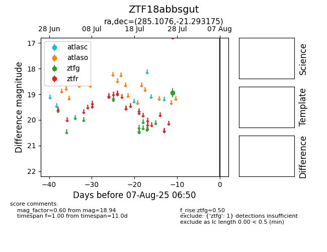

Target ZTF18abbsgut at 2025-08-07 07:30, see:
FINK: fink-portal.org/ZTF18abbsgut
Lasair: lasair-ztf.lsst.ac.uk/objects/ZTF18abbsgut
ALeRCE: alerce.online/object/ZTF18abbsgut
alt names
ZTF18abbsgut (ztf,fink)
coordinates:
equatorial (ra, dec) = (285.1076,-21.29317)
galactic (l, b) = (14.7085,-11.42673)
photometry
last ztfg=18.94
1 ztfg detections
